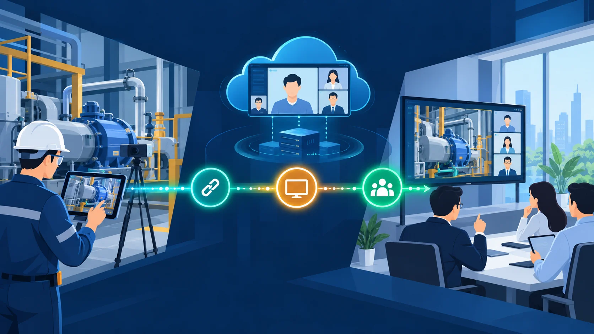

Article · 飞函
Article · 飞函
远程设备验收：内网会议先查网络与权限
车间工程师已经把设备状态页打开，远端验收人员也进入了会议，却只听得到讲解、看不到实时画面。此时再排查网络路径和共享权限，验收时间就会被技术问题占用。会前检查应围绕一个问题展开：指定人员能否从实际所在网络，稳定看到经批准展示的设备画面？
先确认画面从哪里来
屏幕共享展示的是发起人电脑上可见的内容。如果设备画面来自监控客户端、采集设备或浏览器页面，先确认现场电脑能正常打开该画面，再确认由谁负责共享。设备系统的访问权限与会议的共享权限是两道不同的关口；能进入会议，不代表能打开设备页面。
验收前还应确定展示范围：是整块屏幕，还是仅展示验收所需的窗口？如果同一屏幕上可能出现账号、通知或其他项目资料，应先整理桌面和应用窗口，再开始共享。
网络检查从实际参会位置发起
不要只在同一办公室的两台电脑之间试通。让现场共享人和远端验收人分别在届时使用的终端、网络和账号下完成一次短会，依次检查：
- **能否进入会议：**确认终端到会议服务的访问路径、名称解析和网络策略已打通。跨网段或隔离区参会时，由网络管理员按实际部署方案核对所需地址与端口；不要凭通用会议软件的端口清单放行。
- **能否持续传送画面：**共享真实验收页面，观察操作、状态变化和讲解声音能否同步被远端接收。若出现卡顿、黑屏或频繁重连，记录发生的网段、时间和终端，供运维排查带宽、时延、丢包及中间网络设备策略。
- **故障后能否恢复：**模拟短暂断网或重新入会，确认共享人知道如何重新选择画面，主持人知道如何核对参会人员。

权限检查要覆盖人、终端和内容
会前明确主持人、共享人、验收人各自使用的账号，并核对参会范围。共享人的设备画面访问权、终端的屏幕共享与麦克风权限，都应在预演时实际验证；涉及摄像头展示设备外观时，还要检查摄像头权限。会议结束后，按内部流程回收临时开通的设备或网络访问权限。
飞函官方产品资料列有屏幕共享、主持人权限和会议锁定，也列有纯内网部署形态。对于使用飞函的团队，可以把快速拉会和画面共享放进验收流程，并由主持人管理参会边界。具体网络放行项仍应以本单位部署方案和现场测试结果为准。
验收开始前，建议留一份简短记录：参会网段与终端、画面来源、共享人、参会名单、预演结果和异常联系人。这样正式验收时，大家可以把注意力放在设备表现和验收结论上。